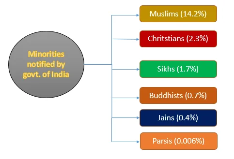
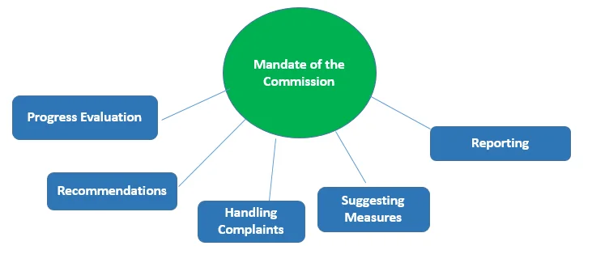

In India, the term “minority” is not explicitly defined in the Constitution. However, the need for a commission to address the concerns of minority communities in India was felt for a long time, as India is a diverse country with a multitude of religious and linguistic groups. The Commission was established to protect and promote the rights of these minority communities.
Establishment of the Commission
The National Commission for Minorities Act (1992) was set up through the following steps:
- Executive Resolution (1978): In 1978, the Government of India established the Minorities Commission through an executive resolution, motivated by the persistent sense of inequality and discrimination experienced by minority communities despite constitutional safeguards.
- Enactment of the Act (1992): To provide a legal framework and grant it statutory status, the National Commission for Minorities Act was enacted in 1992. This led to its renaming as the National Commission for Minorities.
- Autonomous Body: It operates as an autonomous body under the administrative control of the Ministry of Minority Affairs, Government of India.
Definition of ‘Minority’
- Lack of Specific Definition: The Act itself does not provide a specific definition of the term ‘minority.’
- Authority of Central Government: It grants the Central Government the authority to notify communities as minorities for the purposes of the Act.
- Recognition in 1993: Five religious communities were recognized: Muslims, Christians, Sikhs, Buddhists, and Zoroastrians (Parsis).
- Addition in 2014: The Jain community was added to this list.
Neither the Constitution nor the National Commission for Minorities Act defines the term ‘minority’. Religious minorities recognized under the NCM Act:

Constitutional Recognition of Minorities in India
- Articles 15 and 16: Prohibit discrimination on grounds of religion, race, caste, sex, or place of birth and ensure equality of opportunity in employment.
- Articles 25(1), 26, and 28: Guarantee freedom of conscience, right to profess/practice religion, and protection regarding religious instruction in educational institutions.
- Article 29: Provides that any section of citizens residing in India having a distinct language, script, or culture shall have the right to conserve the same. It protects both religious and linguistic minorities.
- Article 30: Ensures all minorities have the right to establish and administer educational institutions of their choice.
- Article 350-B: Provides for a Special Officer for Linguistic Minorities appointed by the President.
Appointment and Service Conditions
- Composition: Multi-member body comprised of a Chairperson, a Vice-Chairperson, and five members nominated by the Central Government.
- Eligibility: Five members, including the Chairperson, must be selected from minority communities only.
- Tenure: Fixed term of three years. Members can resign by writing to the Central Government.
Removal from Office:
The Central Government can remove members for insolvency, criminal conviction involving moral turpitude, unsound mind, inability to act, absence from three consecutive meetings, or abuse of position.
Mandate of the Commission
The 1992 Act outlines a comprehensive nine-point mandate:

- Assess progress of minority development under Union and States.
- Monitor effectiveness of constitutional and legal safeguards.
- Investigate specific complaints about deprivation of rights.
- Conduct research, analysis, and studies on socio-economic and educational development.
- Submit regular or special reports to the Central Government on challenges faced by minorities.
Powers and Reporting
- Civil Court Powers: Summons individuals from any part of India, demands document discovery, and receives evidence on affidavits.
- Parliamentary Presentation: Reports are presented to both Houses of Parliament with an Action Taken Memorandum and reasons for non-acceptance of recommendations.
- State Involvement: Reports concerning a State Government are forwarded to them to be laid before the state legislature.
Conclusion
The NCM plays a crucial role in safeguarding the rights of minority communities. By monitoring safeguards, addressing complaints, and conducting research, the Commission works to ensure equality, justice, and socio-economic development for an inclusive and equitable society.